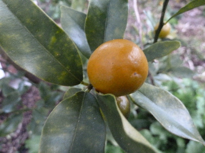
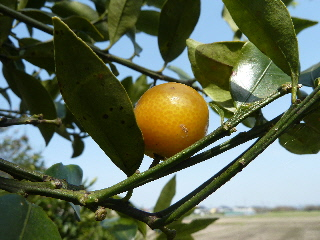
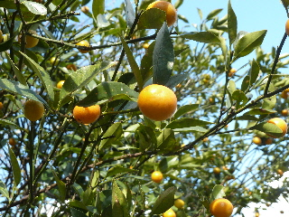
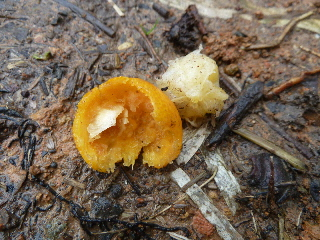
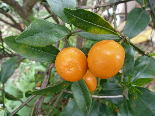

遊びで植物を育てよう
2016/03/06
金柑がちょっと青いけど、美味しくなっていました。
まだ少し青いので、酸っぱいかなー？

試に食べてみたら甘かったです。
美味しい。
【金柑TOP】
【果物TOP】
【園芸TOP】
2015/04/18
キンカンをつまみました。
去年に大量に剪定したので、今年は金柑の実がちょっとしか出来ませんでした。

キンカンを砂糖で漬けるとか、煮るとか、料理するほどの量はないです。
気が向いたらつまんでいただきます。
【金柑TOP】
【果物TOP】
【園芸TOP】
2014/04/06
金柑が食べ頃になりました。
青空バックの写真は爽やかで気持ちいいなー。
こうゆう写真をドンドン撮りたいです。

キンカンがしっかり黄色くなって食べ頃になりました。
沢山あるので、木の近くを通ったらパクパク食べるようにしています。
【金柑TOP】
【果物TOP】
【園芸TOP】
2014/03/02
キンカンが食べられてる。
キンカンの木の下に食べられたキンカンが沢山落ちていました。

鳥の仕業ですね。なんて名前の鳥でしょう？
全部食べられないといいですけど。
【金柑TOP】
【果物TOP】
【園芸TOP】
2013/06/02
金柑がまだ木に成っています。
金柑が沢山成ったので、採り残しがまだあります。

綺麗な色になっていますね。
そろそろ落ちそうなので、今日少し収獲しました。
完熟なので、甘いですね。でも少しジューシー感が無くなったかな。
【金柑TOP】
【果物TOP】
【園芸TOP】
畑仕事じゃないよ。
【おいしいものを食べよう。】【たくさん寝よう。】
【ソロ活をしよう!】【季節感のあることをしよう。】【動画視聴はほどほどに。】【当サイトの全てのコンテンツは無断転載禁止です。】